Winterschlaf – Hörverstehen mit Lückentext (interaktiv)

Wildschwein – Hörverstehen mit Lückentext (interaktiv)
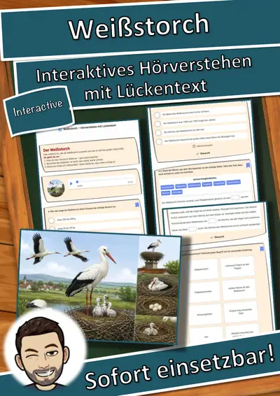
Weißstorch – Hörverstehen mit Lückentext (interaktiv)

Walnussbaum – Hörverstehen mit Lückentext (interaktiv)

Walnuss – Hörverstehen mit Lückentext (interaktiv)
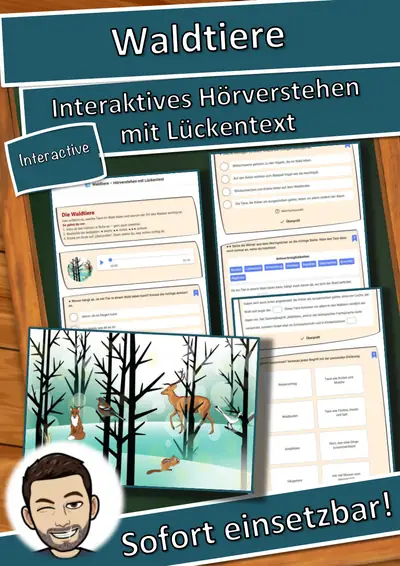
Waldtiere – Hörverstehen mit Lückentext (interaktiv)

Wald – Hörverstehen mit Lückentext (interaktiv)
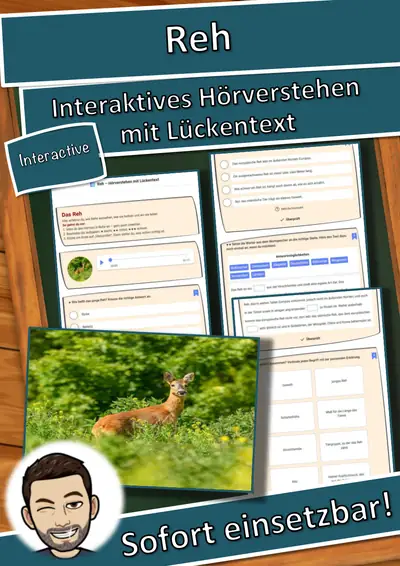
Reh – Hörverstehen mit Lückentext (interaktiv)

Pilze – Hörverstehen mit Lückentext (interaktiv)
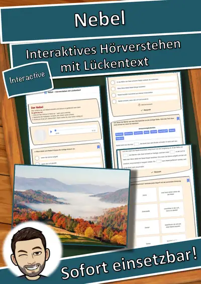
Nebel – Hörverstehen mit Lückentext (interaktiv)

Laubbaum – Hörverstehen mit Lückentext (interaktiv)

Klammerkarten: Im Wald – Gratis-Probe
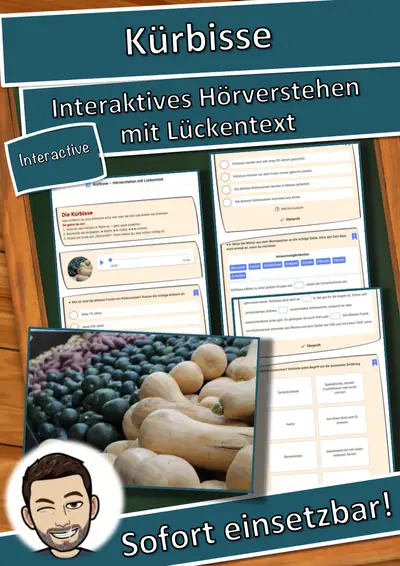
Kürbisse – Hörverstehen mit Lückentext (interaktiv)
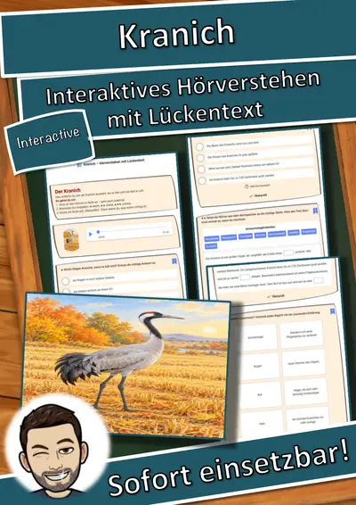
Kranich – Hörverstehen mit Lückentext (interaktiv)

Kastanien – Hörverstehen mit Lückentext (interaktiv)
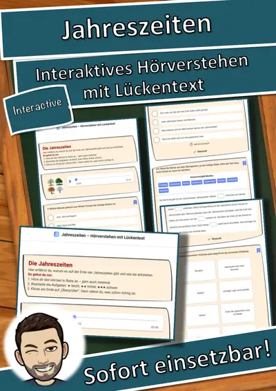
Jahreszeiten – Hörverstehen mit Lückentext (interaktiv)
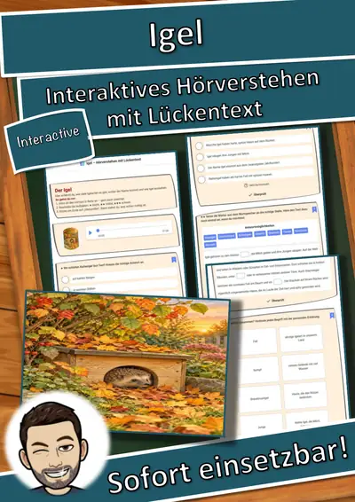
Igel – Hörverstehen mit Lückentext (interaktiv)
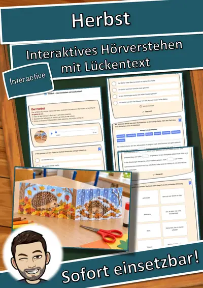
Herbst – Hörverstehen mit Lückentext (interaktiv)

Haselnuss – Hörverstehen mit Lückentext (interaktiv)

Halloween – Hörverstehen mit Lückentext (interaktiv)
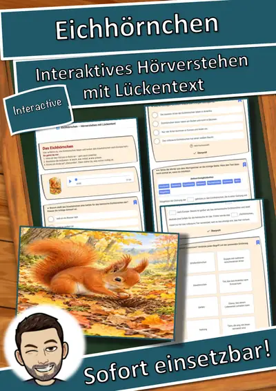
Eichhörnchen – Hörverstehen mit Lückentext (interaktiv)
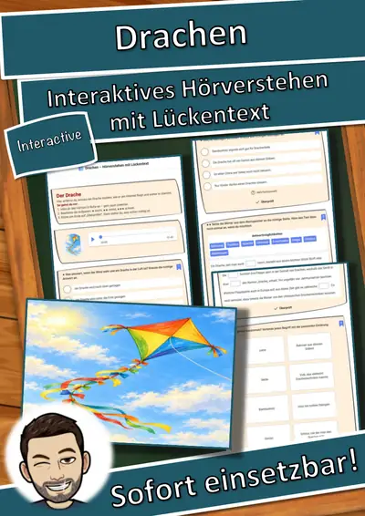
Drachen – Hörverstehen mit Lückentext (interaktiv)

Apfel – Hörverstehen mit Lückentext (interaktiv)

Himmel und Hölle: Im Wald – Himmel und Hölle – Klasse 1–4

Klammerkarten: Im Wald – Klammerkarten – Klasse 1–4

Koordinatenbild Pilz: Punkte eintragen, verbinden, Bild entdecken, Klasse 5–7
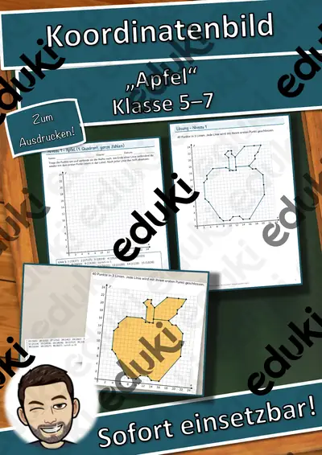
Koordinatenbild Apfel: Punkte eintragen, verbinden, Bild entdecken, Klasse 5–7

Koordinatenbild Laterne: Punkte eintragen, verbinden, Bild entdecken, Klasse 5–7
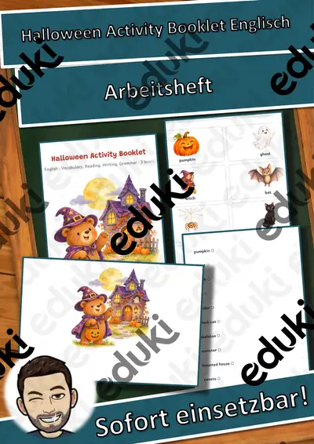
Halloween Activity Booklet Englisch

Wimmel-Werkstatt Tiere im Winter Wimmel-Werkstatt Tiere im Winter – Einheit 1: Winterschlaf, Winterruhe und Winterstarre
Herbst im Klassenzimmer
Wenn die Blätter fallen, liefert die Natur Gesprächsanlässe: Igel suchen ein Winterquartier, Kürbisse sind reif, Halloween steht an. Das Herbstangebot greift das auf und reicht von kleinen Basteleien bis zu Lesespuren für höhere Klassen.
Basteln mit Herbstmotiven
Die Halloween-Reihe umfasst „Klapp-Spukhaus zu Halloween“, „Halloween-Handpuppen“, „Spinnen-Rätsel-Faltkarte“ und „Flatter-Fledermaus am Stab“. Naturnah sind „Herbst-Klappkarte Eichhörnchen“, „Igel im Laubnest“ und „Der Kürbis von innen“. Die „3D-Anhänger Herbst“ ergänzen das Angebot, und „3D-Zauberbild Lebensraum Wald“ verbindet Basteln mit Sachwissen.
Lesen und Sprachen
Neben deutschen Texten gibt es Englischmaterial wie „Halloween Traditions in Ireland“, geeignet für den Englischunterricht ab der Mittelstufe. Lesespurgeschichten verbinden Rätsel mit Herbstthemen und reichen von Grundschule bis Klasse 8.
Auswahl und Einsatz
Die Bastelvorlagen sind für Klasse 1 bis 4 gedacht, mit Anleitung und Wissenstext. Für höhere Klassen lohnt der Blick über die Fachfilter. Die Suche findet dazu weitere Titel, die hier nicht einzeln stehen.
Naturnah unterrichten
Viele Herbstthemen lassen sich draußen vorbereiten: Blätter sammeln, Früchte bestimmen, Spuren suchen. Die Blätter im Klassenzimmer greifen auf, was die Kinder gesehen haben, und sichern es mit Text und Aufgabe. So verbindet sich Erfahrung mit Sachwissen. Besonders gut klappt das mit den Tierbasteleien, weil Kinder dabei ihr Wissen über Winterquartiere sichtbar machen.
Die Bastelvorlagen kommen mit kurzem Sachtext, sodass jedes Kind beim Falten etwas über das Tier erfährt. Ein Elternabend oder Basar bietet später einen schönen Anlass, die Ergebnisse auszustellen.
Wenn du mit einer jahrgangsübergreifenden Gruppe arbeitest, wähle Vorlagen, die sich gut in zwei Anspruchsstufen bauen lassen. Die Beschreibung der einzelnen Titel zeigt dir, wie aufwendig der Bau ist und welche Werkzeuge du bereitlegen solltest.
Häufige Fragen
Sind die Halloween-Materialien für Schulen geeignet, die Halloween nicht feiern?
Die Natur- und Tierthemen kommen ohne Halloween aus. Die Halloween-Reihe ist klar gekennzeichnet.
Gibt es englische Herbstthemen?
Ja, etwa Material zu Halloween in Irland.
Brauche ich spezielles Bastelmaterial?
In der Regel genügen Papier, Schere, Kleber und Stifte. Genaueres steht in der Beschreibung.
Für welche Klassen eignet sich die Herbstseite?
Vor allem für die Grundschule, mit Angeboten bis Klasse 8.